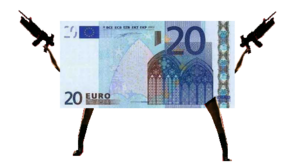

Piriódico:Crisis económica
 De: La Frikipedia, la enciclopedia extremadamente seria.
De: La Frikipedia, la enciclopedia extremadamente seria.
«Debido a la crisis económica actual, para ahorrar gastos de energía, se apagará la luz al final del túnel»
~ dios
Un negro nubarrón planea sobre España y la crisis no ha echo más que empezar, las consecuencias son desastrosas y los economistas predicen un futuro oscuro y deprimente.
Consecuencias de la crisis económica
 El dinero en pie de guerra
- Se acaba el trabajo en la construcción, lo que deja en el paro a casi un millón de inmigrantes. Estos, incapaces de encontrar trabajo no cualificado, se ven abocados a estudiar carreras universitarias. El punto culminante de este proceso de integración tiene lugar en 2010, cuando el líder de los Latin Kings de Móstoles obtiene el Premio Nobel de Física por su contribución a las nuevas teorías de cromodinámica cuántica.
- Millones de españoles, incapaces de pagar la hipoteca, buscan en el crack el consuelo que no encuentran en las páginas salmón. Esto dispara el precio de las drogas duras y hace que la industria española de los estupefacientes sea el único sector patrio económicamente competitivo. Farlopa Mauriño, una cooperativa gallega, sale al mercado de valores con el precio por acción más alto de la década y, en una semana, se integra en el Íbex 35.
- El Rey, como símbolo de su concienciación con los problemas económicos de las clases medias, pone la vela del Bribón a media asta.
- El PP echa la culpa de la crisis al PSOE, el PSOE a Estados Unidos, Estados Unidos a la OPEP, la OPEP a Alá, Alá al Jesucristo y Jesucristo a la entropía.
- El Gobierno privatiza Televisión Española y adquiere Inditex. El conglomerado de empresas textiles, ahora público, pasa a ser dirigido por un comité de sabios elegido por el gobierno y el principal partido de la oposición que, en apenas dos meses, consiguen que Inditex deje de ser rentable.
- Las pateras siguen llegando a las costas españolas, pero sólo para hacer un pis y comer algo, porque luego continúan su ruta hacia Francia.
- Para obtener liquidez, el Gobierno decreta que Pérez, González y López son palabras registradas y que pertenecen al Estado, con lo que toda la gente que se apellide así tiene que pagar un canon a las arcas públicas. Miles de Pérez, González y López se echan a las calles, manifestación que se salda con un montón de primos que hacía años que no se veían.
- La gente empieza a comerse a sus propios perros, con lo que los restaurantes chinos se quedan prácticamente sin stock.
- UGT y Comisiones Obreras, los dos sindicatos mayoritarios, son absorbidos por Apple y dan lugar a la plataforma iJob, que más que un sindicato es un estilo de vida.
- El informe del CIS de 2011 informa de que las mayores preocupaciones de los españoles son, por este orden, el paro, el terrorismo y el hecho de que Jordi Hurtado no envejezca.
- El Xerez C.D. ya no puede hacer ni cesiones.
- El Circuito A1-Ring esta en ruinas.
Autor(es):
- Yournigthmares
- Plasnisk
- Lljosemll
- DipsO
- Gñapero Solitario
- Butters2
- ADrIaN1996
- Mikis2000
Frikipedia 2005-2016, Licencia
GFDL 1.2 - Extraído por FrikiLeaks